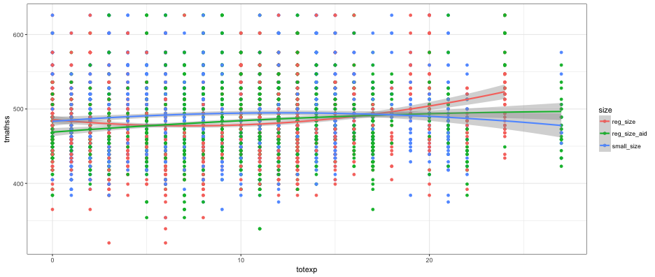
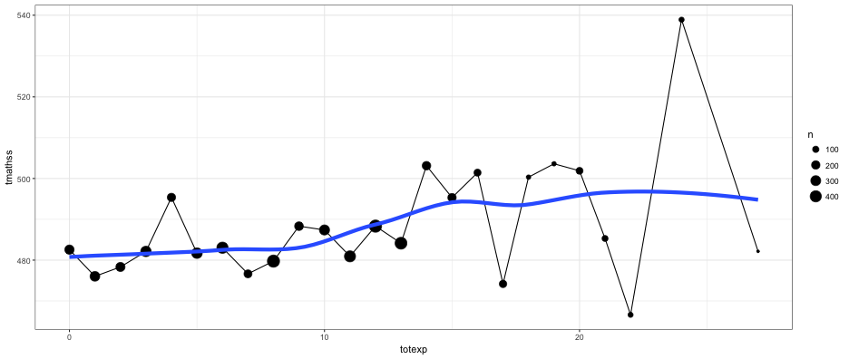
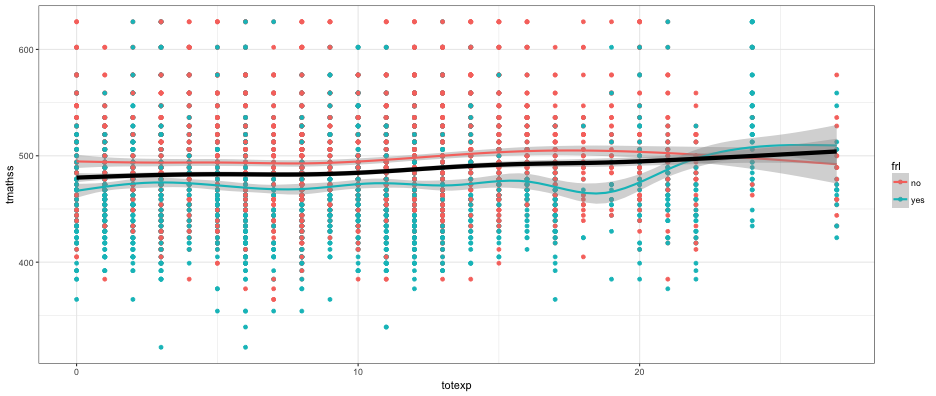
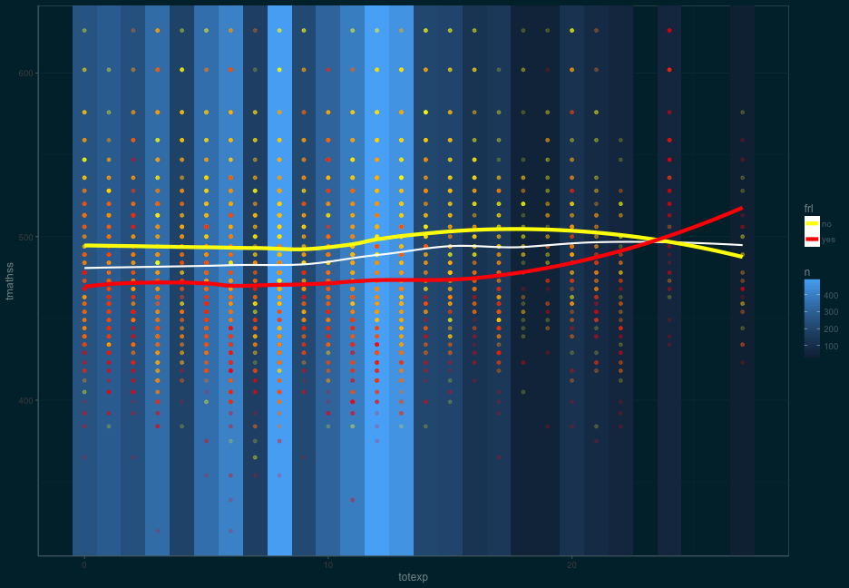
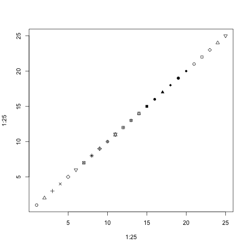

Tidy data is particularly important for ggplot2 because the job of ggplot2 is to map variables to visual properties: if your data isn’t tidy, you’ll have a hard time visualising it.
- Wickham, ggplot2 book, Chapter 9
Aesthetics
- Aesthetics map a variable to a visual clue called a glyph
- When mapping a variable to a glyph, use
aes(). Calls outside ofaes()will affect all elements equally. - Tidy data are glyph-ready data.
Example
- Using the data below, how could you show the relation between math scores and classroom size?
library(tidyverse)
star <- read_csv("./data/star.csv")
head(star)
## # A tibble: 6 × 12
## schidkn sex frl reg_size reg_size_aid small_size white black other
## <int> <chr> <chr> <int> <int> <int> <int> <int> <int>
## 1 63 girl no 0 0 1 1 0 0
## 2 20 girl no 0 0 1 0 1 0
## 3 19 boy yes 0 1 0 0 1 0
## 4 69 boy no 1 0 0 1 0 0
## 5 79 boy yes 0 0 1 1 0 0
## 6 5 boy yes 1 0 0 1 0 0
## # ... with 3 more variables: totexp <int>, tmathss <int>, treadss <int>
Answer: We can’t
… at least not without making some manipulations first.
Let’s tidy!
- In this case, I think it’s easiest to again add a prefix to each variable prior to the gather, then separate and spread on that prefix.
- Notice I’m using a space as a delimiter given that some already have underscores.
names(star)[4:6] <- paste("size", names(star)[4:6])
names(star)[7:9] <- paste("eth", names(star)[7:9])
head(star)
## # A tibble: 6 × 12
## schidkn sex frl `size reg_size` `size reg_size_aid`
## <int> <chr> <chr> <int> <int>
## 1 63 girl no 0 0
## 2 20 girl no 0 0
## 3 19 boy yes 0 1
## 4 69 boy no 1 0
## 5 79 boy yes 0 0
## 6 5 boy yes 1 0
## # ... with 7 more variables: `size small_size` <int>, `eth white` <int>,
## # `eth black` <int>, `eth other` <int>, totexp <int>, tmathss <int>,
## # treadss <int>
Quick aside
If you are using indexing to extract variables, as I did on the previous slide, a better output (I think) is to wrap the names of the data frame in a call to as.data.frame
as.data.frame(names(star))
## names(star)
## 1 schidkn
## 2 sex
## 3 frl
## 4 size reg_size
## 5 size reg_size_aid
## 6 size small_size
## 7 eth white
## 8 eth black
## 9 eth other
## 10 totexp
## 11 tmathss
## 12 treadss
Let’s go through this step by step
- Note - we’re essentially un-dummy-coding these variables
library(tidyverse)
star_tidy <- star %>%
mutate(sid = row_number()) %>%
gather(var, val, c(4:9)) %>%
separate(var, c("var", "val2"), sep = " ") %>%
filter(val == 1) %>%
select(-val) %>%
spread(var, val2) %>%
arrange(sid)
star_tidy
## # A tibble: 5,748 × 9
## schidkn sex frl totexp tmathss treadss sid eth size
## <int> <chr> <chr> <int> <int> <int> <int> <chr> <chr>
## 1 63 girl no 7 473 447 1 white small_size
## 2 20 girl no 21 536 450 2 black small_size
## 3 19 boy yes 0 463 439 3 black reg_size_aid
## 4 69 boy no 16 559 448 4 white reg_size
## 5 79 boy yes 5 489 447 5 white small_size
## 6 5 boy yes 8 454 431 6 white reg_size
## 7 16 girl yes 17 423 395 7 black reg_size_aid
## 8 56 girl no 3 500 451 8 white reg_size
## 9 11 girl no 11 439 478 9 black small_size
## 10 66 girl no 10 528 455 10 white small_size
## # ... with 5,738 more rows
Quick housekeeping
- Let’s reorder the variables to make it a little tidy-er
star_tidy <- star_tidy %>%
select(sid, schidkn, sex, frl, eth, totexp, size, 5:6)
star_tidy
## # A tibble: 5,748 × 9
## sid schidkn sex frl eth totexp size tmathss treadss
## <int> <int> <chr> <chr> <chr> <int> <chr> <int> <int>
## 1 1 63 girl no white 7 small_size 473 447
## 2 2 20 girl no black 21 small_size 536 450
## 3 3 19 boy yes black 0 reg_size_aid 463 439
## 4 4 69 boy no white 16 reg_size 559 448
## 5 5 79 boy yes white 5 small_size 489 447
## 6 6 5 boy yes white 8 reg_size 454 431
## 7 7 16 girl yes black 17 reg_size_aid 423 395
## 8 8 56 girl no white 3 reg_size 500 451
## 9 9 11 girl no black 11 small_size 439 478
## 10 10 66 girl no white 10 small_size 528 455
## # ... with 5,738 more rows
Now can we produce it?
Yes!
theme_set(theme_bw())
ggplot(star_tidy, aes(totexp, tmathss, color = size)) +
geom_point() +
geom_smooth(method = "loess", span = 15)

What if…
- We wanted to have a plot faceted by subject? What would we need to do?
gather once more
- Note, this is still tidy, but the level of analysis has changed. In other words, before, each case (row) represented a student. Now, each case represents a student within a content area.
gathered_star_tidy <- star_tidy %>%
gather(subject, score, tmathss:treadss)
gathered_star_tidy
## # A tibble: 11,496 × 9
## sid schidkn sex frl eth totexp size subject score
## <int> <int> <chr> <chr> <chr> <int> <chr> <chr> <int>
## 1 1 63 girl no white 7 small_size tmathss 473
## 2 2 20 girl no black 21 small_size tmathss 536
## 3 3 19 boy yes black 0 reg_size_aid tmathss 463
## 4 4 69 boy no white 16 reg_size tmathss 559
## 5 5 79 boy yes white 5 small_size tmathss 489
## 6 6 5 boy yes white 8 reg_size tmathss 454
## 7 7 16 girl yes black 17 reg_size_aid tmathss 423
## 8 8 56 girl no white 3 reg_size tmathss 500
## 9 9 11 girl no black 11 small_size tmathss 439
## 10 10 66 girl no white 10 small_size tmathss 528
## # ... with 11,486 more rows
faceted by subject
ggplot(gathered_star_tidy, aes(totexp, score, color = size)) +
geom_point() +
geom_smooth(method = "loess", span = 15) +
facet_wrap(~subject)

Plotting summaries
Compute first
- Produce a summary dataset
- Plot results
by_exp <- star_tidy %>%
group_by(totexp) %>%
summarize(n = n(),
tmathss = mean(tmathss))
by_exp
## # A tibble: 25 × 3
## totexp n tmathss
## <int> <int> <dbl>
## 1 0 252 482.5714
## 2 1 284 476.0317
## 3 2 242 478.3306
## 4 3 339 482.1327
## 5 4 191 495.3770
## 6 5 348 481.7155
## 7 6 406 483.0419
## 8 7 175 476.6457
## 9 8 488 479.7582
## 10 9 215 488.3256
## # ... with 15 more rows
ggplot(by_exp, aes(totexp, tmathss)) +
geom_point(aes(size = n)) +
geom_line() +
geom_smooth(se = FALSE, lwd = 2)
## `geom_smooth()` using method = 'loess'

Summaries with raw data
ggplot(star_tidy, aes(totexp, tmathss)) +
geom_point(aes(color = size)) +
geom_smooth(col = "black", lwd = 2) +
geom_smooth(aes(color = size))

Difference by frl?
ggplot(star_tidy, aes(totexp, tmathss, color = frl)) +
geom_point() +
geom_smooth() +
geom_smooth(data = star_tidy, lwd = 2, col = "black")

A complicated example
library(ggthemes)
low_y <- min(star_tidy$tmathss, na.rm = TRUE)
high_y <- max(star_tidy$tmathss, na.rm = TRUE)
ggplot(by_exp, aes(totexp, tmathss)) +
geom_rect(aes(xmin = totexp - 0.5,
xmax = totexp + 0.5,
fill = n),
ymin = -Inf,
ymax = Inf) +
ylim(low_y, high_y) +
geom_point(data = star_tidy, aes(color = frl), alpha = .2) +
geom_smooth(col = "white", lwd = 1, se = FALSE) +
geom_smooth(data = star_tidy, aes(color = frl),
lwd = 2,
se = FALSE,
method = "loess") +
scale_color_manual(values = c("yellow", "red")) +
theme_solarized(light = FALSE)

Quick aside
Want to index line type or points by number? Create these references.
plot(1:25, 1:25, pch = 1:25)

plot(1:5, 1:5, type = "n")
for(i in 1:5) lines(x = c(1, 5), y = c(i, i), lty = i, lwd = 2)